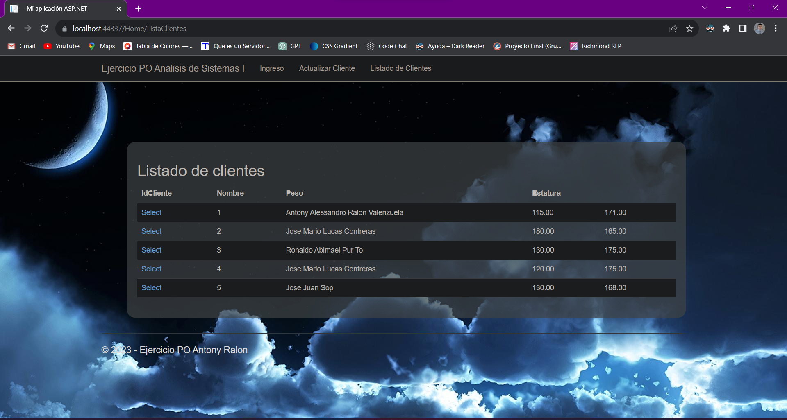
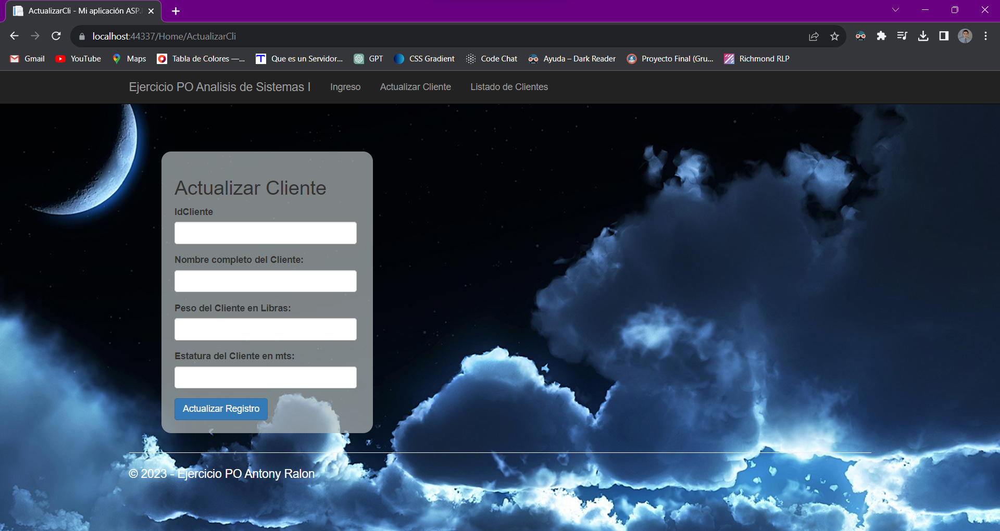

Portafolio
PO .NETEste proyecto tubo como finalidad poner en practica los conocimientos adquiridos de la programación orientada a objetos usando como lenguaje base de programación C# en .Net, auxiliado de SQL Server como motor de Base de Datos y de Bootstrap como librería de estilos |


|